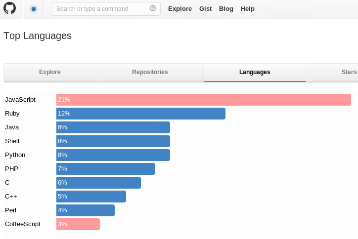
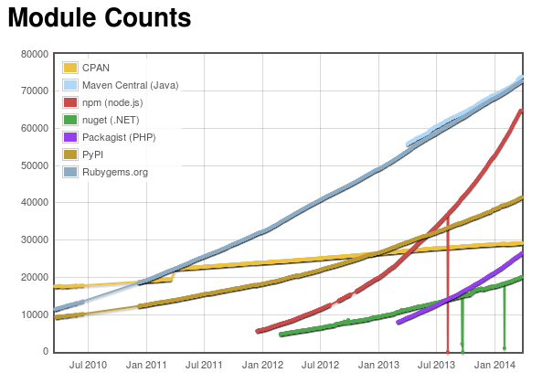

var http = require('http');
http.createServer(function (req, res) {
res.writeHead(200, {'Content-Type': 'text/plain'});
res.end('Hello World\n');
}).listen(80, '127.0.0.1');
$ node hello.js
fs.readFile('./file', function (err, data) {
if (err) throw err;
console.log(data);
});
JS Idioms
setTimeout(function () {
// do stuffs
}, 1000);
{
"name": "multiplayer-pong",
"main": "./lib/server",
"version": "0.1.0",
"description": "Play pong",
"homepage": "https://github.com/theosp/multiplayer-pong",
"author": {
"name": "Daniel Chcouri",
"email": "333222@gmail.com"
},
"engines": {
"node": ">=0.10.0"
},
"dependencies" : {
"socket.io": "0.9.x",
"express": "3.3.x",
"underscore": "1.5.x",
"nconf": "0.6.x",
"marked": "0.2.x"
},
"readmeFilename": "README.md"
}
$ npm publish


var express = require('express');
var app = express();
app.get('/', function(req, res){
res.send('hello world');
});
app.listen(3000);
var express = require('express');
var app = express();
app.get('/', function(req, res){
});
app.post('/register_user/', function(req, res){
});
app.listen(3000);
var express = require('express');
var app = express();
app.use("/shared_dir", express.directory("/directory"));
app.listen(3000);
var io = require('socket.io').listen(80);
io.sockets.on('connection', function (socket) {
socket.emit('news', { hello: 'world' });
socket.on('my other event', function (data) {
console.log(data);
});
});
socket.on("disconnect", function (error) {
$("#connection_status").html("Disconnected");
clear_position_interval();
});
socket.on("error", function (error) {
handle_error(error.error);
});
socket.on("controller_registered", function () {
$("#connection_status").html("Connected");
message("Waiting for game to begin");
});
socket.on("start", function (side) {
controller_side = side;
if (side === 0) {
message("<=== Left Team Play!");
}
if (side === 1) {
message("Right Team Play! ===>");
}
});
position_interval = setInterval(function () {
var joystick_position = $joystick.position().top + (joystick_height / 2);
var direction;
if (joystick_position < up_bound_height) {
direction = 1;
} else if (joystick_position < down_bound_height) {
direction = 0;
} else {
direction = -1;
}
if (direction !== current_direction) {
current_direction = direction;
socket.emit("direction", field_id, controller_id, controller_side, current_direction);
}
}, 20);
socket.emit("new_field");
socket.on("field_registered", function (field_id) {
var controller_url = "http://" + CONFIG.domain + "/remote_control/?field_id=" + field_id;
var $qrcode = $("#qr-code");
var qr_size = 188;
$qrcode.html("").css({"padding": "10px", "width": qr_size + "px", "background-color": "white", "margin": "15px auto"});
new QRCode($qrcode.get(0), {text: controller_url, width: qr_size, height: qr_size});
$("#controller_url").html(controller_url);
});
socket.on("controller_connected", function () {
$("#connected_players").html(parseInt($("#connected_players").html(), 10) + 1);
});
socket.on("controller_disconnected", function () {
$("#connected_players").html(parseInt($("#connected_players").html(), 10) - 1);
});
socket.on("direction", function (side, direction) {
paddle = side === 0 ? pong.leftPaddle : pong.rightPaddle;
if (direction === 1) {
paddle.stopMovingDown();
paddle.moveUp();
} else if (direction === 0) {
paddle.stopMovingUp();
paddle.stopMovingDown();
} else {
paddle.stopMovingUp();
paddle.moveDown();
}
});
socket.on('direction', function (field_id, controller_id, side, direction) {
var field_socket = fields[field_id];
// CODE: verify field_id validity
controllers[field_id][controller_id].direction = direction;
// CODE: calcualte avrage direction of controllers in the same field and
// side
field_socket.emit("direction", side, direction);
});